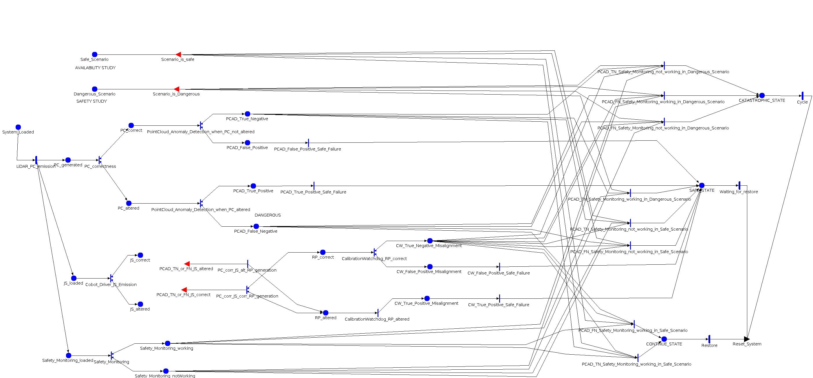

Model: CogniSafe3D_model

Note on the study setup.
The model documented above (CogniSafe3D_model) is the only SAN model of the project that is described here.
For simplicity, the reward variables and the whole study (range studies and performance variables) have been conducted
in parallel on this same model, using two copies of it that differ only in name and in the initial marking of the scenario places:
Safe_Scenario = 1 (and Dangerous_Scenario = 0). It is used to evaluate the availability of the system through the reward safe_state (reward model Reward_Availability), i.e. the steady-state probability of SAFE_STATE.Dangerous_Scenario = 1 (and Safe_Scenario = 0). It is used to evaluate safety through the reward catastrophic_state (reward model Reward_Safety), i.e. the steady-state probability of CATASTROPHIC_STATE.The scenario remains the same for the whole execution, so each copy only keeps the part of the model that is reachable under its own scenario (e.g. the copies only contain the activities, gates and places relevant for that scenario). The structure, the case probabilities and the gates are otherwise identical to those of CogniSafe3D_model. The range studies and reward tables below are reported exactly as defined in the project, so they refer to the copies by their names (CogniSafe3D_model_safeScenario and CogniSafe3D_model_dangerousScenario), which are the same model as CogniSafe3D_model described above.
| Place Names | Initial Markings | Description |
|---|---|---|
| Safe_Scenario | | The scenario is not hazardous; no criticalities are present. |
| Dangerous_Scenario | | The scenario is hazardous; criticalities are present. This is the opposite of Safe_Scenario. |
| System_Loaded | | The system is ready to be executed. |
| PC_generated | | Point clouds (PCs) are generated. |
| PC_correct | | PCs are generated and the whole path from the LiDAR to the processing has not affected the correctness of it. |
| PC_altered | | Opposite meaning of PC_correct. |
| PCAD_True_Negative | | The evaluation of the Point Cloud Anomaly Detection returned a True Negative. |
| PCAD_False_Positive | | The evaluation of the Point Cloud Anomaly Detection returned a False Positive. |
| PCAD_True_Positive | | The evaluation of the Point Cloud Anomaly Detection returned a True Positive. |
| PCAD_False_Negative | | The evaluation of the Point Cloud Anomaly Detection returned a False Negative. |
| JS_loaded | | JS data are generated and transmitted to the CogniSafe3D processing unit. |
| JS_correct | | JS received by the CogniSafe3D's processing unit has not been affected by alterations. |
| JS_altered | | Opposite meaning of JS_correct. |
| RP_correct | | The Extrinsic Calibration has generated a correct Robot Pose, despite the inputs. |
| RP_altered | | Opposite meaning of RP_correct. |
| CW_True_Negative_Misalignment | | The Calibration Watchdog correctly says that the system is properly calibrated. |
| CW_False_Positive_Misalignment | | The Calibration Watchdog has recognized an un-calibration in the system where there is not one. |
| CW_True_Positive_Misalignment | | The Calibration Watchdog has recognized properly an un-calibration in the system. |
| Safety_Monitoring_loaded | | The Safety Monitoring is ready to be executed. |
| Safety_Monitoring_working | | Probabilistically, with independent choice with respect to the previous execution, the Safety Monitoring is working properly. |
| Safety_Monitoring_notWorking | | Opposite meaning of Safety_Monitoring_working. |
| CONTINUE_STATE | | This state is the normal operation of the system, in which the PCs are captured at 10Hz and an evaluation of the risk of the scenario is properly carried out and no risks are currently happening. |
| SAFE_STATE | | System state reached when CogniSafe3D does not emit the safety heartbeat (HB). |
| CATASTROPHIC_STATE | | System state reached when faults/alterations go undetected, or the scenario risk is not properly evaluated, so the safety HB is sent even when it should not be. |
| Timed Activity: | Cycle |
|---|---|
| Distribution Parameters | Rate1 |
| | |
| | |
| Timed Activity: | LiDAR_PC_emission |
|---|---|
| Distribution Parameters | Rate1 |
| | |
| | |
| Timed Activity: | Restore |
|---|---|
| Distribution Parameters | Rate1 |
| | |
| | |
| Timed Activity: | Waiting_for_restore |
|---|---|
| Distribution Parameters | Rate1 |
| | |
| | |
| Instantaneous Activity: | CalibrationWatchdog_RP_correct |
|---|---|
| | case 1p_CW_correctly_not_detect_misalignmentcase 2 1-p_CW_correctly_not_detect_misalignment |
| Instantaneous Activity: | Cobot_Driver_JS_Emission |
|---|---|
| | case 1p_Cobot_Driver_JS_correct_emissioncase 2 1-p_Cobot_Driver_JS_correct_emission |
| Instantaneous Activity: | PC_corr_JS_corr_RP_generation |
|---|---|
| | case 1p_RP_correct_generation_with_PC_and_JS_correctcase 2 1-p_RP_correct_generation_with_PC_and_JS_correct |
| Instantaneous Activity: | PC_correctness |
|---|---|
| | case 1p_LiDAR_PC_correct_emissioncase 2 1-p_LiDAR_PC_correct_emission |
| Instantaneous Activity: | PointCloud_Anomaly_Detection_when_PC_altered |
|---|---|
| | case 1p_PC_anomaly_correctly_detectedcase 2 1-p_PC_anomaly_correctly_detected |
| Instantaneous Activity: | PointCloud_Anomaly_Detection_when_PC_not_altered |
|---|---|
| | case 1p_PCAD_correctly_workingcase 2 1-p_PCAD_correctly_working |
| Instantaneous Activity: | Safety_Monitoring |
|---|---|
| | case 1p_Safety_Monitoring_correctly_workingcase 2 1-p_Safety_Monitoring_correctly_working |
| Input Gate: | PCAD_TN_or_FN_JS_altered |
|---|---|
| | return((PCAD_True_Negative->Mark() + JS_altered->Mark() == 2) || (PCAD_False_Negative->Mark() + JS_altered->Mark() == 2)); |
| | JS_altered->Mark() = 0; |
| Input Gate: | PCAD_TN_or_FN_JS_correct |
|---|---|
| | return((PCAD_True_Negative->Mark() + JS_correct->Mark() == 2) || (PCAD_False_Negative->Mark() + JS_correct->Mark() == 2)); |
| | JS_correct->Mark() = 0; |
| Input Gate: | Scenario_is_Dangerous |
|---|---|
| | Dangerous_Scenario -> Mark() ==1 |
| | ; |
| Input Gate: | Scenario_is_safe |
|---|---|
| | Safe_Scenario -> Mark() == 1 |
| | ; |
| Output Gate: | Reset_System |
|---|---|
| | Safety_Monitoring_notWorking -> Mark() = 0; Safety_Monitoring_working -> Mark() = 0; CONTINUE_STATE -> Mark() = 0; PCAD_True_Negative -> Mark() = 0; PCAD_False_Positive -> Mark() = 0; PC_correct -> Mark() = 0; SAFE_STATE -> Mark() = 0; PCAD_True_Positive -> Mark() = 0; JS_correct -> Mark() = 0; RP_correct -> Mark() = 0; RP_altered -> Mark() = 0; JS_altered -> Mark() = 0; PC_altered -> Mark() = 0; PCAD_False_Negative -> Mark() = 0; CW_False_Positive_Misalignment -> Mark() = 0; CW_True_Positive_Misalignment -> Mark() = 0; CW_True_Negative_Misalignment -> Mark() = 0; CATASTROPHIC_STATE -> Mark() = 0; // token to allow restart System_Loaded -> Mark() = 0; JS_loaded -> Mark() = 1; Safety_Monitoring_loaded -> Mark() = 1; PC_generated->Mark()=1; //Scenario remains the same for the whole time |
| Run on the copy of CogniSafe3D_model named CogniSafe3D_model_safeScenario (initial marking Safe_Scenario = 1). | |||||||
| | | | | | | | |
|---|---|---|---|---|---|---|---|
| p_CW_correctly_not_detect_misalignment | double | Manual | [0.999, 0.9999, 0.99999, 0.999999, 0.9999999] | - | - | - | - |
| p_Cobot_Driver_JS_correct_emission | double | Fixed | 0.9999999999877 | - | - | - | - |
| p_LiDAR_PC_correct_emission | double | Manual | [0.99, 0.999, 0.9999, 0.99999, 0.999999, 0.9999999] | - | - | - | - |
| p_PCAD_correctly_working | double | Fixed | 0.8556 | - | - | - | - |
| p_PC_anomaly_correctly_detected | double | Fixed | 0.8148 | - | - | - | - |
| p_RP_correct_generation_with_PC_and_JS_correct | double | Manual | [0.999, 0.9999, 0.99999, 0.999999, 0.9999999] | - | - | - | - |
| p_Safety_Monitoring_correctly_working | double | Manual | [0.999, 0.9999, 0.99999, 0.999999, 0.9999999] | - | - | - | - |
| Run on the copy of CogniSafe3D_model named CogniSafe3D_model_dangerousScenario (initial marking Dangerous_Scenario = 1). | |||||||
| | | | | | | | |
|---|---|---|---|---|---|---|---|
| p_CW_correctly_not_detect_misalignment | double | Manual | [0.999, 0.9999, 0.99999, 0.999999, 0.9999999] | - | - | - | - |
| p_Cobot_Driver_JS_correct_emission | double | Fixed | 0.9999999999877 | - | - | - | - |
| p_LiDAR_PC_correct_emission | double | Manual | [0.99, 0.999, 0.9999, 0.99999, 0.999999, 0.9999999] | - | - | - | - |
| p_PCAD_correctly_working | double | Fixed | 0.8556 | - | - | - | - |
| p_PC_anomaly_correctly_detected | double | Fixed | 0.8148 | - | - | - | - |
| p_RP_correct_generation_with_PC_and_JS_correct | double | Manual | [0.999, 0.9999, 0.99999, 0.999999, 0.9999999] | - | - | - | - |
| p_Safety_Monitoring_correctly_working | double | Manual | [0.999, 0.9999, 0.99999, 0.999999, 0.9999999] | - | - | - | - |
| Performance Variable Model: Reward_Availability | ||
|---|---|---|
| Top Level Model Information | Child Model Name | CogniSafe3D_model_safeScenario |
| Model Type | SAN Model | |
| Note | Same model as CogniSafe3D_model, renamed, with initial marking Safe_Scenario = 1. | |
| Performance Variable : safe_state | |||
|---|---|---|---|
| Affecting Models | CogniSafe3D_model_safeScenario | ||
| Impulse Functions | |||
| Reward Function | (Reward is over all Available Models)return(CogniSafe3D_model_safeScenario->SAFE_STATE->Mark()); | ||
| Simulator Statistics | Type | Steady State | |
| Options | Estimate Mean | ||
| Include Lower Bound on Interval Estimate | |||
| Include Upper Bound on Interval Estimate | |||
| Estimate out of Range Probabilities | |||
| Confidence Level is Relative | |||
| Parameters | Initial Transient | 0.0 | |
| Batch Size | 1.0 | ||
| Confidence | Confidence Level | 0.95 | |
| Confidence Interval | 0.1 | ||
| Performance Variable Model: Reward_Safety | ||
|---|---|---|
| Top Level Model Information | Child Model Name | CogniSafe3D_model_dangerousScenario |
| Model Type | SAN Model | |
| Note | Same model as CogniSafe3D_model, renamed, with initial marking Dangerous_Scenario = 1. | |
| Performance Variable : catastrophic_state | |||
|---|---|---|---|
| Affecting Models | CogniSafe3D_model_dangerousScenario | ||
| Impulse Functions | |||
| Reward Function | (Reward is over all Available Models)return(CogniSafe3D_model_dangerousScenario->CATASTROPHIC_STATE->Mark()); | ||
| Simulator Statistics | Type | Steady State | |
| Options | Estimate Mean | ||
| Include Lower Bound on Interval Estimate | |||
| Include Upper Bound on Interval Estimate | |||
| Estimate out of Range Probabilities | |||
| Confidence Level is Relative | |||
| Parameters | Initial Transient | 0.0 | |
| Batch Size | 1.0 | ||
| Confidence | Confidence Level | 0.95 | |
| Confidence Interval | 0.1 | ||